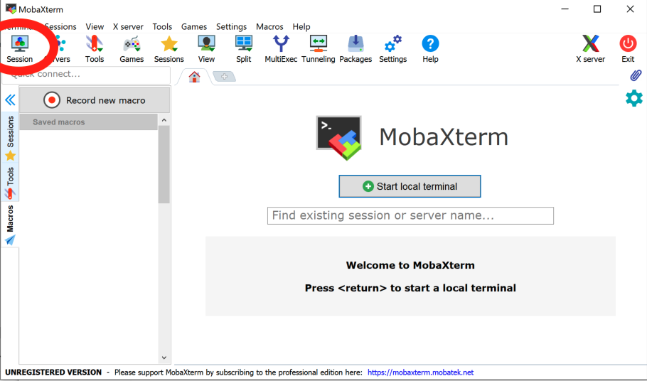
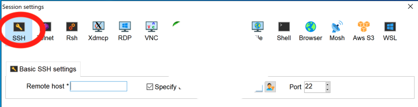
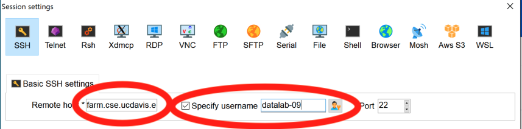
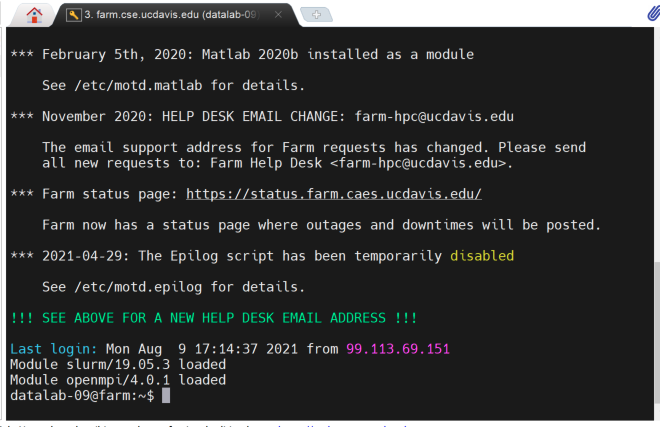
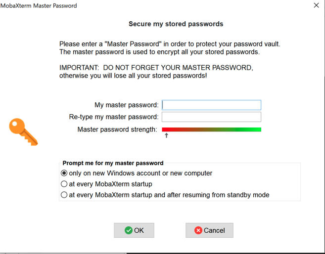
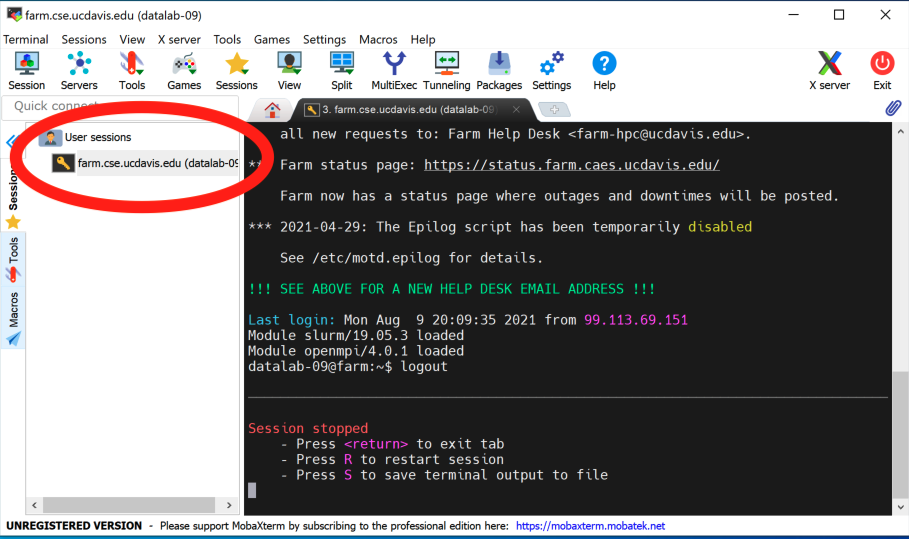
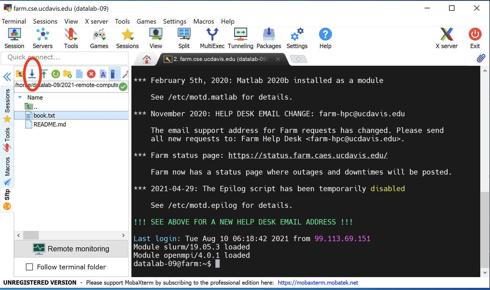

3 Connecting to remote computers with ssh
This two hour workshop will show attendees how to connect to remote computers using ssh software, which is the most common way to do so. We will discuss usernames and passwords, introduce ssh software clients, and work through the most common challenges attendees will face in connecting to remote computers.
3.1 SSH and Clients
We’re going to be using SSH, the Secure Shell protocol, to connect to a remote computer - in this case, the ‘farm’ computer at UC Davis. We’ll use it for the next 7 workshops, and then in workshop 11, we’ll use ssh to connect to a computer that we rent from Amazon instead.
ssh is a standard way to connect to remote computers, both to run commands and to retrieve files. It uses an encrypted connection so nothing you type can be seen by anyone else, which protects your passwords as well as any other data you send.
3.1.1 Some security thoughts
A few points on the security front -
- you still need to use a secure authentication method (password, or private key - we’ll show you that in workshop 4!)
- people can still look over your shoulder, and if they have access to your computer they can do things like install keyloggers.
- ssh doesn’t hide the fact that you’re communicating with a particular remote computer, which is sometimes what snoopers care about (e.g. nation-states)
But, by and large, security for researchers is not about stealing your data, it’s about breaking into the remote computers for other reasons.
ssh is a pretty good protection against network eavesdroppers and so on.
3.1.2 ssh as a protocol - many clients!
ssh operates as a network “protocol”, which means that the sender (your local computer, in this case) and the receiver (the farm computer) can be running any software that “speaks” ssh, and they can communicate just fine. In particular, this means you can use many different software packages that speak ssh - known as ssh “clients” - and we link to some below.
For our lessons, we’re going to use two specific ssh clients, one for Mac OS X that’s just called “ssh”, and one for Windows that’s called MobaXterm. We’ve chosen these because ssh comes with Mac OS X, so we don’t need to install it, and we have a lot of experience with MobaXterm. Unfortunately they’re (mostly) quite different in appearance, so we’re going to run through them separately the first time through.
There are many alternatives - for example, for Mac OS X there are many different free SSH clients, and here is a list of 10 ssh clients for Windows. They will all look and feel somewhat different, but they will all get you the same place!
Windows users: While we’re working through the Mac OS X ssh connection, please go to the Windows instructions and start downloading MobaXterm - thanks!.
3.2 Mac OS X: Using the Terminal program
Find and open the Terminal program using Spotlight - it’s under Applications. It will look and feel a lot like the things you saw in Workshops 1 and 2 :).
(Congratulations! You have unlocked a secret of Mac OS X - it’s got a command line underneath, because it’s actually a UNIX operating system!)
Now type
ssh datalab-XX@farm.cse.ucdavis.eduwhere you replace XX with your user number (between 10 and 60). (You should received an e-mail from “Titus Brown” with the subject “Farm account name (remote computing 2021 workshop series)”. Ask a TA for help if you can’t find this e-mail.)
You will be confronted with a “password:” prompt. Copy and paste in the password from your farm account e-mail. Ask a TA for help if you need it! Note that the password does not display, so it will look like nothing is being entered when you paste.)
And voila, you are now logged into farm! You should be at a prompt that looks like this:
datalab-09@farm:~$
3.3 Windows: Connecting to remote computers with MobaXterm
Steps:
Go to the MobaXterm download page.
Select “Home Edition”.
Select “Portable edition”. It’s 25 MB and will take about a minute to download.
Find the downloaded Zip file in your Downloads folder (should be named “MobaXterm_Personal_21.2”), and double click on it.
In the
MobaXterm_Personal_21.2folder, run the MobaXterm 21.2 Application.

Note: You may need to “allow access on all networks for this application” if Windows asks.
Click on Session… (upper left).
In the new window, click on SSH (upper left).

- Under “Basic SSH settings”, set “Remote host” to “farm.cse.ucdavis.edu”.
This is the computer name you are connecting to.
Click on “specify username”, and enter the username you received in the e-mail from “Titus Brown” with the subject “Farm account name (remote computing 2021 workshop series)”. (Ask a TA for help if you can’t find this e-mail.)
Then select OK.

It will now open up a terminal-looking window that will ask for your password. Select your password from your e-mail and copy it (ask a TA for help if you can’t find your password). Then use right-click to paste it. (It may open a pop-up window asking what you want right-click to do. Select the default.)
Hit enter, and it should log you in!

Congratulations!
It will probably ask you if you want to store the password in your password store, and then ask you for a master password. You can then use this master password to “unlock” all your ssh passwords for MobaXterm to use. You can pick something short and simple to remember since (at least for now) you’ll only be using it to log into the temporary account at farm, but if you end up using MobaXterm a lot you may want to change it.

3.4 Logging out and logging back in.
OK. Now that you’re in, …log out and log back in!
To log out, type ‘logout’.
Then go back through the above to make sure you’ve got it all right.
A few notes -
- for Mac OS X, you can use the up arrow to go to the previous command and run it. You’ll need to type your password in again, though.
- for MobaXterm, you’ll be able to do use the saved password so you won’t need to type your password in again; see the screenshot below.

3.5 You’re logged on to a remote computer. Now what?
The magic of UNIX and the command line is that once you’re logged onto a remote computer, …everything works the same.
Yes, you will have access to different files, and maybe different software, and different compute resources (more disk space, maybe more CPUs or more memory) but the command line basically works the same whether you’re logged in to your laptop, a workstation next door, or an HPC across the world.
Let’s start by reprising some of the basics from workshop 1 (the command line) and workshop 2 (editing text files).
3.5.1 Welcome to your account!
Start by running:
pwdand you will see something like /home/ctbrown, although it will vary
with the account name you used. This is because we’re all using different
accounts with different default home directories.
3.5.2 Loading some files into your account
Before we go any further, we need some files!
You’ll note that if you do an ls, there’s nothing in your home directory.
That’s because most UNIX accounts start out empty. (Sometimes there will be
generic files like “Desktop” and so on in there - it depends on the
system.)
Well, actually, it’s not quite empty. Try:
ls -laand you’ll see a few configuration files and directories. All of these are created automatically for you and you don’t need to worry about them for now.
So, basically, your account is empty of user files.
So let’s get some files!
There are actually many ways to download files, and we’ll show you a few over the next few workshops.
We’ll start by mimicking the setup of the binders on days 1 and 2 by copying a bunch of files from GitHub into your account.
The following command will take the set of files here and make them appear in your account:
git clone https://github.com/ngs-docs/2021-remote-computing-binder/– note that git and GitHub are something we’ll cover more thoroughly in week 8. For now, just accept it as one way to go out and get files :).
Now if you do
lsyou’ll see a directory 2021-remote-computing-binder/. Let’s cd into it -
cd 2021-re<TAB>if you hit the TAB key where it says <TAB>, you’ll get command-line completion to work.
If you type
ls -Fyou should see some familiar sights (at least if you attended workshops 1 and 2) -
2cities/ binder/ data/ README.md SouthParkData/
– yep, these are the files we worked with on those two days!
3.5.3 Revisiting file and path manipulation
If you
cd data/and do
lsyou’ll see the following files:
MiSeq Slide1.jpg hello.sh nano1.png README.md gvng.jpg nano2.png
and with
ls -awe will see the following:
. MiSeq Slide1.jpg hello.sh nano1.png .. README.md gvng.jpg .hidden nano2.png
Now, if you navigate into the tmp1 directory located in the
.hidden directory,
cd .hidden/tmp1you will be in a different absolute
directory than you were on in the binder - now it’ll be something like
/home/ctbrown/2021-remote-computing-binder/data/.hidden/tmp1, rather
than /home/jovyan/data/.hidden/tmp1.
That’s because we’re on a different system, with a different user
account than before, and (unlike with the binder) we are going to be
doing more things than just exploring the contents of the binder, so
we’ve put things in the folder underneath 2021-remote-computing/
to contain data for today and workshop 4.
This is an example of home directory organization and project management, which we’ll be talking about in workshop 6 (project organization) - how to organize your account so that you can figure out what the files in it probably mean.
At this point, you could do the rest of workshop 1’s lesson, but rather than do that, let’s just note that all of the relative path navigation you did will continue to work, even though you’re on a different computer in a different account than you were using for workshops 1 and 2.
For example, you can copy files between directories using the same relative path as before,
cp thisinnotit.txt ../tmp2and we navigate to the tmp2 directory and list the files that are in it we will see the thisinnotit.txt file has been copied to the tmp2 directory.
cd ../tmp2
ls -l– but the difference is that this directory is now under
/home/ACCOUNT/2021-remote-computing-binder/data/ rather than
/home/jovyan/data/. Try running pwd and you’ll see that:
pwd3.5.4 Revisiting file editing
Now go back to the 2021-remote-computing binder directory –
cd ~/2021-re<TAB>Here, the ~/ refers to the absolute path to your home directory,
whatever your username is - it’s different for everyone in the class! -
and then the 2021-remote-computing-binder/ is a directory underneath it.
We can use the file command as in workshop 2 to look at the file type of
2cities/book.txt.gz –
file 2cities/book.txt.gz– and then uncompress it,
gunzip 2cities/book.txt.gzwhich will produce the uncompressed file 2cities/book.txt from the compressed file 2cities/book.txt.gz. If we run head on the .txt file, we’ll see the
first 10 lines of the file:
head 2cities/book.txtConveniently, all three editors that we showed you in workshop 2 are available here - let’s use nano (or an editor of your choice) to edit the book.txt file. If you’re using nano, run
nano 2cities/book.txtand use the arrow key to go down 9 lines to a blank line, and type
kilroy was here! or something else silly and identifiable.
Now save, using CTRL-X, then ‘y’, then ENTER.
Now, if you run
head 2cities/book.txtyou should see that your edits are there.
A difference from what we did in workshops 1 and 2 is that these changes are now persistent. Unlike binder, the files on farm don’t go away when you log out!
3.6 Copying files to and from your local computer.
So, we’ve just edited files on the ‘farm’ computer, which is a remote computer system (located on the UC Davis campus). Suppose that we want to get a copy of that file locally. How do we do that?
The method varies depending on which ssh client you’re using.
3.6.1 Mac OS X: Copying files using ssh.
If you’re on Mac OS X, log out of farm by typing
logoutand now you will be still in the Terminal program, but your shell prompt will be running on your local computer instead of farm.
Note: it’s important that you’re no longer at the farm prompt! You should not see ‘farm’ in the command-line prompt!
Now run the following command, replacing ‘-XX’ with your datalab account number:
scp datalab-XX@farm.cse.ucdavis.edu:2021-remote-computing-binder/2cities/book.txt /tmpand you should see output that looks something like this:
book.txt 100% 788KB 2.6MB/s 00:00
The scp command stands for “secure copy” and it mimics the syntax of the
cp command: scp <from> <to>, where either <from> or <to> can be a remote location of the form login@computer:path/to/location.
Now open your /tmp folder - you can do that with open /tmp - and you should
see ‘book.txt’ there!
3.6.2 Windows: Copying files using MobaXterm.
This is actually pretty easy :). Go to the file pane in your MobaXterm window, and select 2021-remote-computing-binder. Then select the 2cities folder. Then select ‘book.txt’, and click the ‘download’ button. (See screenshot below.)

It will ask you where to put it; just put it somewhere you can find it, like your Desktop.
3.6.3 View and change the file you just downloaded
Go ahead and open the file you just downloaded on your local
system. You should see the changes you made with the nano editor on
the remote system. Congratulations!!
Now, edit it using whatever editor you like and change something recognizable.
Be sure to save it!
3.6.4 Copy the file back to farm.
On Windows with MobaXterm, you can use the “upload” button (next to the
download button :) to upload book.txt from your Desktop back to farm.
On Mac OS X, you need to run the command:
scp /tmp/book.txt datalab-XX@farm.cse.ucdavis.edu:2021-remote-computing-binder/2cities/CHALLENGE: Now verify that your book.txt file on farm contains the
changes you made on your local computer, by:
- if you’re on Mac OS X, logging into farm
- changing to the
2021-remote-computing-binder/2cities/directory - using
head,less, or an editor to look at thebook.txtfile.
3.6.5 Digression: why do you need to log into/log out of farm on Mac OS X?
You may have noticed that, on Mac OS X, we’re logging out of farm to
run commands on the local machine. That’s because scp is a shell command
that’s running on your local computer.
That brings up two questions. First, why aren’t we running it on farm? And second, is there any way that we can avoid logging out, the way the Windows folk can avoid logging out?
The answer to the first question is that
3.7 Some commands are available! Others are not.
You may remember looking at the South Park CSV data set in lesson 2 -
cd ~/2021-remote-computing-binder/SouthParkData/
gunzip All-seasons.csv.gz
head All-seasons.csvand those commands are all standard UNIX commands. You can also use cut, grep, sort, and uniq just fine - for example, let’s calculate how many times a character in South Park (in column 3) has “computer” in its name –
cut -d, -f3 All-seasons.csv | grep Computer | sort | uniq -cSo those commands all work. But csvtk doesn’t – this command fails,
csvtk cut -f Character All-seasons.csv | grep Computer | sort | uniq -cbecause csvtk isn’t installed. And that’s what we’ll be showing you how to do in workshop 5 - install software like csvtk using conda.
3.8 Summing up file transfer - a challenge!
Let’s all do the following:
- Download the file
All-seasons.csvfrom the directory2021-remote-computing-binder/SouthParkData/on farm to your local computer. - Open it in a spreadsheet program and edit the first line.
- Export it to a CSV file with the name
All-seasons-changed.csv - Upload the file back to farm, to the directory
2021-remote-computing-binder/SouthParkData/ - Log into farm and confirm it’s there and that the changes are present, using
head All-seasons-changed.csv.
3.9 Summing things up
Today, you learned how to log into remote systems, execute commands, and transfer files to and from your local computer.
In our next workshop we will talk more about using shared systems to do work.